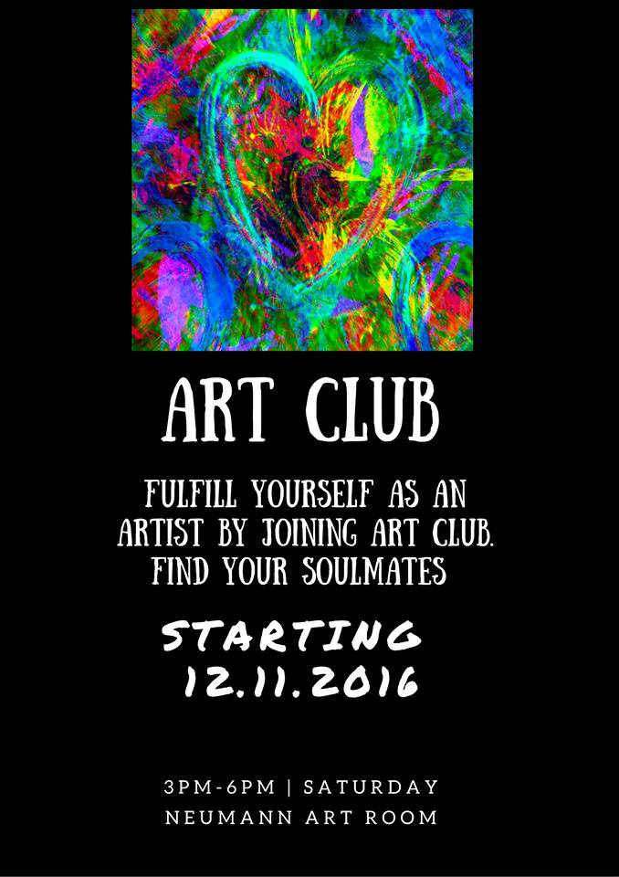

Being a student I am trying to develop myself in all possible ways, especially in art, which is tightly connected with my major of Contemporary Communication. This is the field I feel I can pursue arts in all ways of communication, technology, politics and physical pieces of art. One of my latest and the most professional projects for now is the Art Club persuasive campaign for my Persuasion and Propaganda class. I have done this campaign together with a group of 4 more LCC students. The poster which we prepared for the research poster session you can get to know below:
